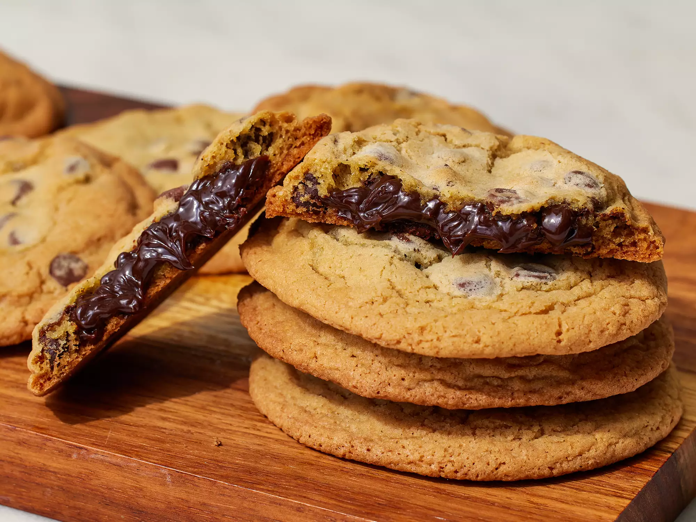

Fudge-Stuffed Chocolate Chip Cookies

Description
These are the great, classic chocolate chip cookies you know and love, packed with gooey goodness. The hot fudge center stays soft even after your cookies have fully cooled. Store in an airtight container at room temperature for up to 3 days.
Ingredients
- 1 ½ cups water
- 1 cup long grain white rice
- ¼ cup extra-virgin olive oil
- 4 cloves garlic, pressed
- 1 tablespoon ground paprika
- 1 teaspoon ground cumin
Direction
- Preheat the oven to 400 degrees F (200 degrees C). Line a large, rimmed baking sheet with parchment paper.
- Bring water and rice to a boil in a medium saucepan. Cover and reduce heat to low. Simmer until tender, about 20 minutes.
Step 3
- While the rice is cooking, mix olive oil, garlic, paprika, cumin, and cayenne pepper in a medium bowl. Pour 1 tablespoon spiced oil into a small bowl; whisk in yogurt and season with salt and pepper. Set yogurt sauce aside.
- Place tilapia fillets on the prepared baking sheet and rub with 2 tablespoons spiced oil.